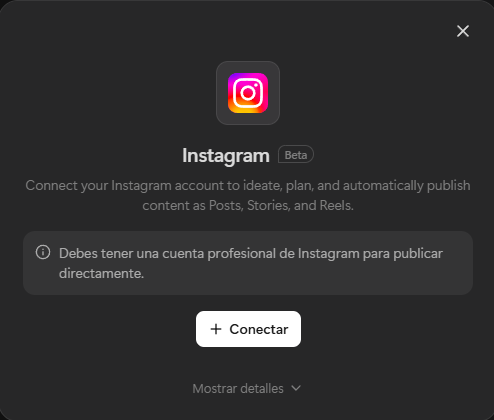

Tus activos digitales en Meta no son entidades sueltas; forman parte de una estructura oficial de mayor a menor. Entender esto es vital para tu arquitectura de datos y automatización avanzada.
Es el "Dueño del Edificio". Representa a tu empresa legal y es el contenedor principal de todos los activos.
Función: Paga las facturas, gestiona usuarios y tiene la propiedad de las cuentas comerciales.
Es la "Carpeta de Activos". Dentro de tu portafolio, puedes tener múltiples cuentas de WhatsApp. No te confundas: una cosa es el número y otra es la cuenta que lo contiene.
Tipos de Cuenta: Puedes tener una cuenta para la WhatsApp Business API (WABA) para automatización masiva, y otra independiente para gestionar un número en la WhatsApp Business App.
Es la identidad final del número dentro de la infraestructura Cloud de Meta. Un número normal se convierte en un API Number cuando se "desconecta" del chip físico y se registra en la nube.
Función: Es el terminal técnico que recibe órdenes de Manychat o Meta AI. Su "dirección" única es el Phone Number ID.
Para obtener los IDs reales y validar el estado de tus activos:
Entender esta conexión exacta es como ver la "Matrix" del ecosistema de Meta. Así es como la App de tu celular, Manychat y los Servidores de Meta convergen en una sola arquitectura funcional.
Todo nace en el Meta Business Portfolio. Representa a "Economía IA" legalmente. Meta Cloud API es el dueño de la tubería por donde viajan los bits.
Puedes usar Manychat (externo) o el nuevo Meta AI (nativo). Son los encargados de procesar la lógica y responder sin que tú toques el celular.
Muchos dueños de negocio intentan crecer usando solo la App del celular, pero se topan con límites invisibles que Meta diseñó a propósito.
Pensada para micro-negocios y atención manual.
Infraestructura Cloud diseñada para procesar millones de datos.
El asistente nativo de Meta (Llama 3) es potente para el día a día, pero tiene fronteras claras frente a la automatización profesional.
Además de chatbots y respuestas en vivo, el ecosistema de Meta permite delegar la creación y publicación de contenido usando agentes avanzados como Manus.
Manus puede operar de manera autónoma ejecutando rutinas. En lugar de publicar manualmente, puedes asignarle a Manus la tarea de generar la idea, redactar el copy, ensamblar el contenido y publicar tus Reels o Posts a la hora exacta en la que tu audiencia está más activa, de forma iterativa y sin intervención humana.
El agente se vincula a tu infraestructura delegándole credenciales de publicación de Meta. Al conectar tu cuenta de Instagram a Manus, el agente actúa directamente sobre tu perfil con persmisos oficiales, logrando que el flujo desde la ideación hasta el post publicado sea 100% nativo.

Vinculación técnica entre el agente Manus y el portafolio de Instagram